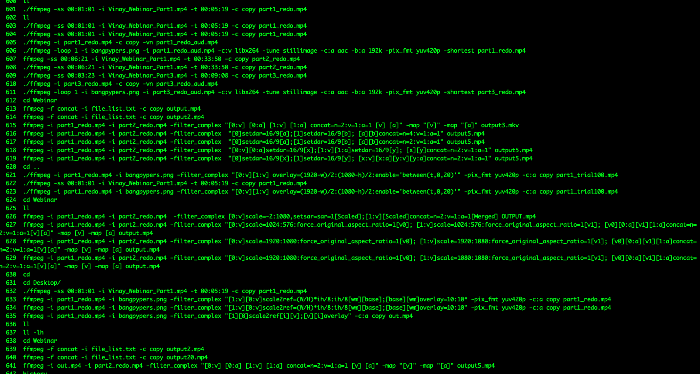

What I Learnt from 6 hours of tinkering with FFmpeg [December 6, 2020]#
What is FFmpeg?#
In their own words, FFmpeg is “A complete, cross-platform solution to record, convert and stream audio and video.”
I’ve been recording Bangpypers videos for the last few months and I haven’t really had access to a proper solution to edit videos and audio that I could have got for free/ low-cost. A good friend of mine, Vinay Keerthi, (who incidentally presented the webinar under discussion) told me to chuck GUI based fronts for editing them and told me to try FFmpeg, the CLI tool directly, which these tools probably use in the background anyway.
So I gave it a shot. And while it isn’t very hard to break into, there are a lot of things that aren’t very straight-forward. But it’s definitely a treat to use and it gives you a sense of satisfaction when things work.
tl;dr - I basically just edited a couple of videos using a CLI tool. No biggie. But the potential it opens up for me by way of not having to ever download an illegal copy of a GUI based tool (don’t tell anyone I did this) or be restricted by what they offer doesn’t have to be the case anymore :)
My case-study’s solution :#
So I’ve mentioned above about videos recorded for Bangpypers. This particular case today was for editing one such video.
Basically, I had a 40 minute webinar that I needed to cut up to replace a part of the video with an image, and then stitch these sections with another video, also a part of the webinar but recorded separately. This second half also needed to have some part of the video trimmed and the rest have the video be replaced with the Bangpypers Logo.
There were a lot of experiments I did in the process.
For now, here’s a working set of steps:
Split the first video from [0,time_a] and [time_a,time_b] resulting in videos say - video_1_a.mp4, video_1_b.mp4
Overlay the video in video_1_a with the desired png = bangpypers.png.
Once the overlayed video is available, stitch video_1_a_overlay.mp4 to video_1_b.mp4. = video_1_final.mp4
In this step, there were issues because the image used was a 900*900 png but the video in question was of a higher resolution. So the obvious remedy was to scale the image and stitch it up. But I took some time to get to this resolution and found ways to stitch it directly just fine but the resultant was obviously very messed up. So the entire set of steps had to be repeated.
For the second video, treat it similarly as in the video_1_a.mp4. Let’s call this video_2.mp4
Trim the video from [time_a,end]
Overlay the trimmed video with the desired png = bangpypers.png.
Stitch video_1_final.mp4 to video_2_final.mp4
Usage:#
You should typically have ffmpeg natively installed if you’re using a Mac. If you’re on Windows/ Linux, you can download the binary at https://ffmpeg.org/download.html
Once you’ve downloaded the binary, add it to your path if you’re on Windows. If you’re on Linux, the installation should typically take care of that for you.
In this post, I’m using a Mac, so I will be directly using FFmpeg as
ffmpeg.
Commands for steps above:#
Video 1
ffmpeg -ss 00:01:01 -i Webinar_Full_Part1.mp4 -t 00:05:19 -c copy video_1_a.mp4
ffmpeg -ss 00:06:21 -i Webinar_Full_Part1.mp4 -t 00:33:50 -c copy video_1_b.mp4
ffmpeg -i video_1_a.mp4 -i bangpypers.png -filter_complex "[1][0]scale2ref[i][v];[v][i]overlay" -c:a copy video_1_a.mp4
ffmpeg -i video_1_a.mp4 -i video_1_b.mp4 -filter_complex "[0:v] [0:a] [1:v] [1:a] concat=n=2:v=1:a=1 [v] [a]" -map "[v]" -map "[a]" video_1_processed.mp4
Video 2
ffmpeg -ss 00:03:23 -i Webinar_Full_Part2.mp4 -t 00:09:08 -c copy video_2.mp4
ffmpeg -i video_2.mp4 -i bangpypers.png -filter_complex "[1][0]scale2ref[i][v];[v][i]overlay" -c:a copy video_2.mp4
ffmpeg -i video_2.mp4 -vf scale=1920:1080,setsar=1:1 video_2_processed.mp4
Final
ffmpeg -i video_1_processed.mp4 -i video_2_processed.mp4 -filter_complex "[0:v] [0:a] [1:v] [1:a] concat=n=2:v=1:a=1 [v] [a]" -map "[v]" -map "[a]" Webinar_video_processed.mp4
The net result of this learning can be viewed at our Bangpypers Channel - https://www.youtube.com/watch?v=xickNijifOs
Explanation/ Legend of params used -#
ss: Start time as hh:mm:sst: Duration for which to clipv: Videoa: Audio[0:v] [0:a] [1:v] [1:a] concat=n=2:v=1:a=1 [v] [a]: Concatenating 2 videos (n=2) where bothvandaexist. Hencev=1,a=1The last parameter in each of the commands is the output video.
Chronicled some more of the commands here -#
Links referred#
https://stackoverflow.com/questions/37327163/ffmpeg-input-link-in1v0-parameters-size-640x640-sar-169
https://stackoverflow.com/questions/7333232/how-to-concatenate-two-mp4-files-using-ffmpeg
https://stackoverflow.com/questions/40480153/how-to-overlay-place-an-image-on-a-video-in-ffmpeg
https://stackoverflow.com/questions/19425674/ffmpeg-concat-and-scale-simultaneously
https://superuser.com/questions/855276/join-2-video-file-by-command-or-code
https://superuser.com/questions/268985/remove-audio-from-video-file-with-ffmpeg
https://video.stackexchange.com/questions/15468/non-monotonous-dts-on-concat-ffmpeg
Bloopers#
I made a lot of mistakes in trying other stuff but learnt quite a bit in the process. Here’s a glimpse of the commands tried -

I hope this helps you if you’re looking for help with FFMpeg. Feel free to mail/tweet at me if you have any issues!
About Bangpypers#
Bangpypers is one of Bangalore’s largest Python User Groups. We conduct Meetups where we have talks and workshops on topics related to Python. Feel free to reach out to mail me in case you want to talk at any of our upcoming sessions. We conduct one every month. More details regarding meetups at https://www.meetup.com/Bangpypers/. We’re also on Twitter!